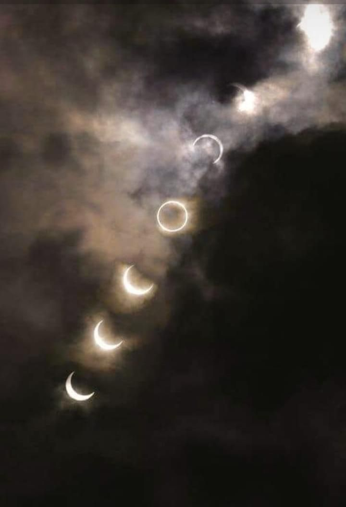

About Us
Background of Astronomy Club
Est. 1994, Astronomy Club brings people from all walks to share their passion about Astronomy.
In the past, we host multiple outreach programmes with multiple secondary schools and also competitions.
We also hosted overseas trip to places such as batam, where we shot beautiful Astrophotography in the nightsky.
What Can You Expect as a Member?
Watch a meteor shower, launch a (water) rocket, enjoy a live-stream session of Kerbal Space Program,
paint with light, take a trip through our curated space map events
— or even introduce the club to something entirely new!
Meaning of ASTro
Art
Science
Technology
We called our club ASTro, as Astronomy is at the intersection of many domains; Art, Science, and Technology.
In each event we hold, we cover the various, Arts & Culture, Sciences involved, and the Technology used to get there.
Icons made by Freepik from www.flaticon.com
Our Committee members
Eden
President
Reenikka
Vice-President
Devansh
Social Media Manager, Secretary,
Treasurer, & Quartermaster
Natalia
Subcommittee
Brian
Subcommittee
Jovan
Subcommittee
Jeshvanth
Subcommittee
Benedict
Subcommittee
Keysha
Subcommittee
Isanne
Subcommittee
Our Telescopes
Telescope 1
Specification: 200mm 8” Schmidt Cassegrain Telescope
Functionality: Inactive
Manufacturer: Celestron
Telecope 2
Specification: 200mm 8” Schmidt Cassegrain Telescope
Functionality: Active
Manufacturer: Celestron
Telescope 3
Specification: 200mm 8” Homemade Dobsonian
Functionality: Inactive
Manufacturer: NYP Astronomy Club
Telescope 4
Specification: 200mm 8” Orion Dobsonian
Functionality: Inactive
Manufacturer: Orion
Telescope 5
Specification: 200mm 8” Homemade Dobsonian
Functionality: Inactive
Manufacturer: NYP Astronomy Club

Telescope 6-8
Specification: 70mm Refractor
Functionality: Active
Manufacturer: Celestron
(Image credit: B & H Photos)
Telescope 9-11
Specification: 90mm Maksutov-Cassegrain
Functionality: Active
Manufacturer: Celestron